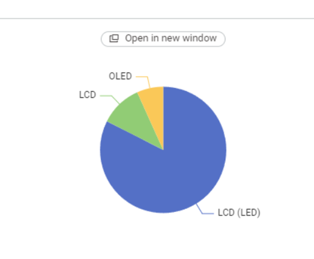
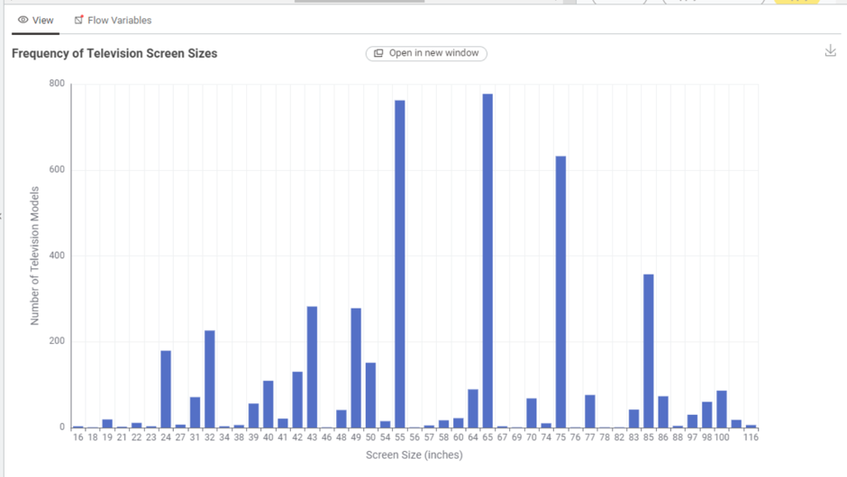
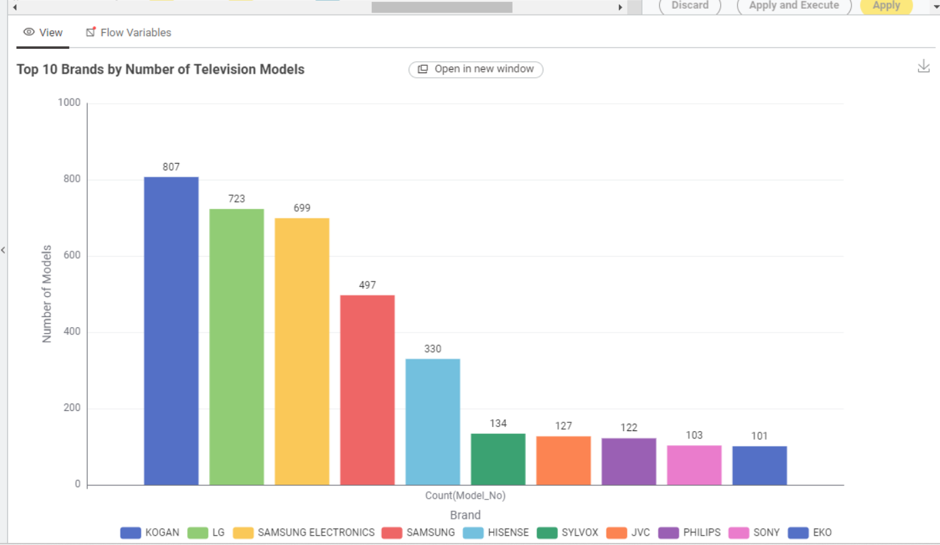
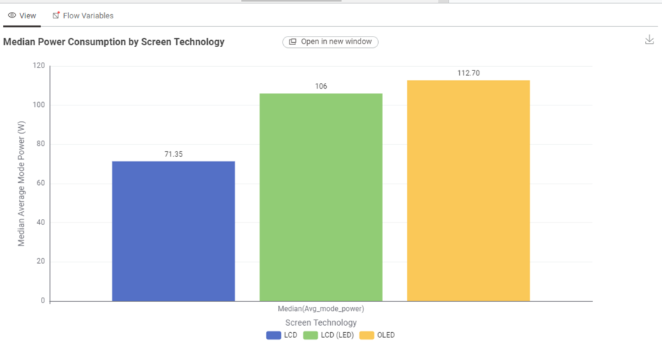
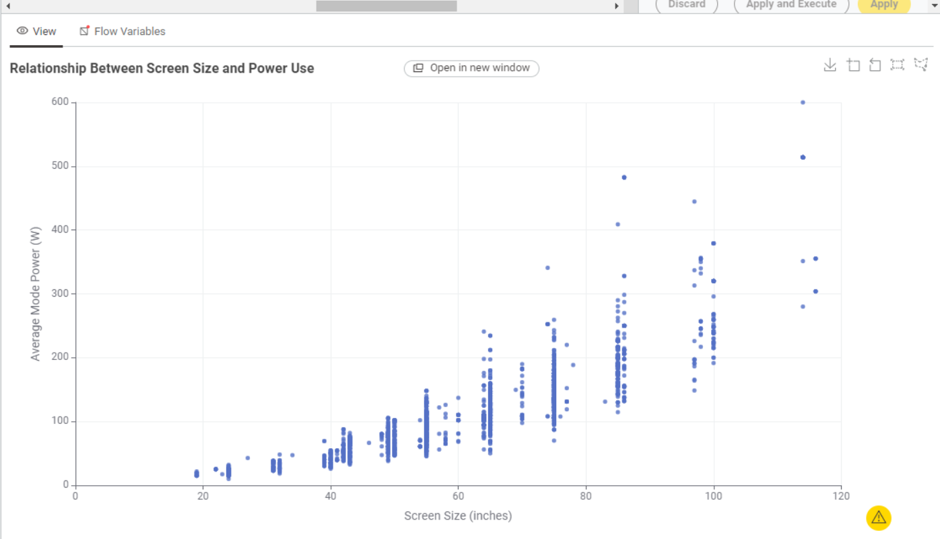
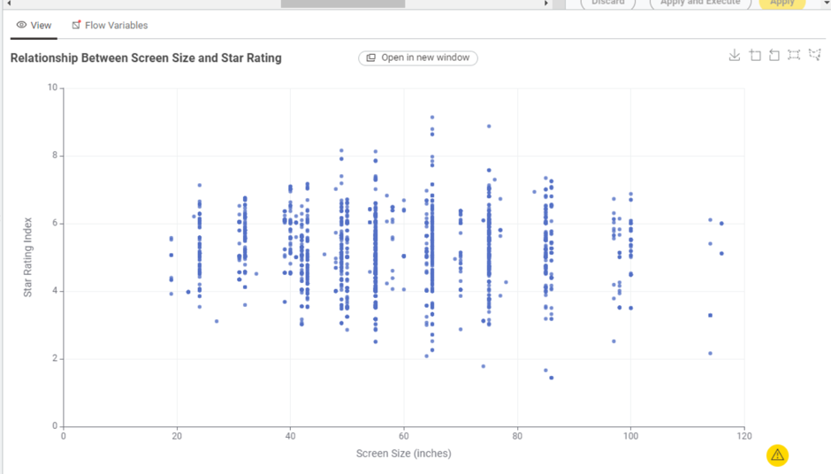

Appliance Energy Consumption
Explore energy consumption information of televisions and household appliances available in the Australian market.
Why Energy Efficiency Matters
Energy-efficient appliances can reduce electricity usage, lower household costs and support sustainable living.
Australian Energy Ratings
Appliances in Australia use energy rating labels to help consumers compare efficiency before purchasing.
Television Energy Usage
Explore the availability, screen sizes, brands and energy consumption of television models currently available in Australia.
What type of TV screen technologies are currently available in Australia and which are the most frequent?

The available screen technologies are LCD, LCD (LED), and OLED. LCD (LED) is the most frequent screen technology.
What screen sizes are currently available, and which are the most frequent?

Television models are available in screen sizes ranging from 16 to 116 inches. The most frequently available screen size is 65 inches
Which brands have the greatest number of different models?

KOGAN has the greatest number of different television models, with 807 models, followed by LG with 723 models and SAMSUNG ELECTRONICS with 699 models.
Which type of screen technology consumes the least amount of power?

LCD televisions have the lowest median power consumption at approximately 71.35 W, compared with 106 W for LCD (LED) and 112.7 W for OLED.
What is the relationship between screen size and power use?

There is a positive relationship between screen size and power use. In general, larger television screens tend to consume more power.
What is the relationship between star rating and screen size?

The scatter plot shows no clear relationship between television screen size and star rating.
About Us
This website was developed for COS30045 Data Visualisation to demonstrate web development skills using HTML, CSS and JavaScript.
Project Purpose
The purpose of this website is to provide a platform for exploring appliance energy consumption information in the Australian market.
Development Tools
Technologies used include HTML for structure, CSS for styling, JavaScript for interaction, GitHub for version control and Vercel for website deployment.